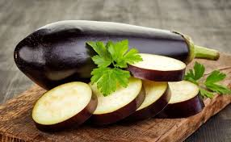
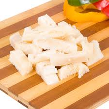

P
R
A
T

CHEIO
Você sabia que existem vários tipos de fogão? Com a tecnologia da atualidade, existem muitas versões diferentes, de todos os preços e modelos possíveis. Confira essa matéria e saiba quais são os tipos de fogão disponíveis no mercado e conheça a diferença entre eles:
É o mais comum e simples de instalar: basta encaixar seus pés e está pronto! Normalmente vêm nas opções 4, 5 e 6 bocas, além de terem vários tamanhos diferentes para se adequarem a qualquer cozinha.
É o tipo de fogão ideal para cozinhas planejadas ou para cozinhas muito pequenas. Por não terem pés nem acabamentos laterais, eles devem ser encaixados em móveis ou bancadas, o que economiza espaço e facilita na hora da limpeza. Para isso, não é preciso medir antes da compra para que não aconteçam erros e ele possa ser encaixado corretamente na cozinha.
Os fogões elétricos são modelos mais tecnológicos e cheios de aparatos especiais que facilitam sua vida na cozinha. Além do acendimento superautomático, eles costumam vir com dois fornos, um elétrico e um a gás, além de relógio para avisar quando a comida está pronta, ventiladores de dissipação de calor para assar melhor, termômetro para assar carnes, forno a vapor e outros.
O cooktop tem conquistado os amantes de culinária por seu design bonito e inovador, além de economizar espaço na cozinha. Tradicionalmente instalado sobre uma bancada, o cooktop é superfácil de limpar e há três tipos: elétrico, a gás e por indução. O cooktop a gás é o mais parecido com o fogão tradicional, podendo ser manual, automático ou superautomático, e funciona com o gás natural como combustível. O cooktop elétrico é mais prático e fácil de manusear, pois não perde calor e mantém melhor a temperatura, preparando assim os alimentos mais rápido. Já o cooktop por indução é o mais moderno e permite total controle da temperatura por um painel de touch, além de não perder calor e ter um sistema de desligamento automático assim que se tira a panela, fazendo com que a placa esfrie e previna acidentes. Incrível, né?
Próprio para uso profissional, o fogão industrial tem capacidade para panelas muito grandes, além de ser bem espaçoso e largo, possibilitando que tenha uma chama maior que a do fogão doméstico. Além disso, permitem a instalação de chapas para grelhas e fornos especiais, sendo essencial em cozinhas profissionais. Tudo que um chef precisa, né?
Típico em fazendas e casas do interior, o fogão a lenha funciona com o uso da combustão causada pela queima da lenha, o que faz com que solte muita fumaça, não sendo indicado, assim, para espaços pequenos e que não tenham um exaustor. Hoje existem diversos modelos que podem ser usados dentro de casa, trazendo um toque de antiguidade para sua cozinha. Além disso, esses fogões são extremamente duráveis, tendo um ótimo custo-benefício.
Perfeitos para viagens e festas, esses fogões, normalmente com duas bocas, funcionam a gás ou por resistência elétrica. Muito práticos, leves de carregar e cômodos, eles são perfeitos para te acompanharem por aí e te ajudarem na hora do aperto.
A Organização Mundial da Saúde (OMS) recomenda ingerir cinco porções de frutas e outros vegetais diariamente. No Brasil, encontramos uma variedade enorme de frutas nas feiras e mercados: durante todo o ano, há disponíveis frutas deliciosas como laranja, melancia, abacate, tangerina, mamão, abacaxi e outras. Mas muita gente ainda deixa de lado esses alimentos no dia a dia. Se você é uma dessas pessoas, confira a seguir 7 dicas para comer mais frutas e ser mais saudável:
Além de ser uma ótima maneira de iniciar o dia com muita energia e nutrição, comer frutas no café da manhã é prático e rápido. Além disso, a fruta pode ser consumida de muitas formas: in natura, como vitamina batida no liquidificador, como uma salada de frutas, acompanhando uma tapioca, junto com iogurte ou até como suco. São muitas formas e todas maravilhosas que vão te dar aquele força especial para começar o dia!
Os sucos naturais, feitos com a própria fruta, são muito mais saborosos e saudáveis que sucos prontos e refrigerantes. Mas atenção: o suco não substitui o consumo da fruta in natura, viu? Mas com certeza é um hábito saudável e que complementa seu alimento diário de frutas.
Com a rotina corrida, nem sempre conseguimos nos organizar para preparar lanchinhos para consumirmos ao longo do dia, certo? Nessas horas, a fruta é sempre a melhor opção. Carregue sempre frutas variadas dentro da bolsa para todos os lugares: trabalho, faculdade, passeios… Isso fará com que você tenha sempre um lanche prático por perto, que além de saudável e delicioso, evita com que você compre salgados ou industrializados na rua.
Não tem nada de errado em comer um docinho de vez em quando. Mas todos os dias não dá, né? Por isso, quando bater aquela vontade de comer doce logo após o almoço, coma uma frutinha! Ela vai saciar sua vontade de comer doce e vai te manter longe de calorias desnecessárias. Melhor deixas as outras sobremesas para o final de semana, certo?
Algumas frutas, como a banana e a maçã, são muito práticas para se ter à mão. Mas comer frutas repetidamente, apesar de sua praticidade, pode fazer com que você enjoe delas. Por isso, que tal preparar marmitas de porções variadas alternando as frutas? Assim você vai ter sempre uma salada de fruta diferente à disposição!
Em dias muito quentes, nada como um alimento refrescante, certo? Nessas horas, invista nas frutas, principalmente aquelas que têm muita água como manga, abacaxi, melão e melancia. As frutas trazem a sensação de frescor e nos ajudam a lidar melhor com o calor e altas temperaturas. Por morarmos em um país tropical como o Brasil, temos muitas frutas próprias pra esse clima, por isso aproveite!
As frutas de estação são aquelas que só estão disponíveis em um determinado período como o morango, o caqui, o pêssego e outras. Por isso, aproveite esse momento e consuma essas frutas dentro do seu período de estação.
A berinjela é um vegetal muito gostoso e supernutritivo. Ela pode ser encontrada em mais de 3 tipos que se diferem em tamanho, cor e sabor. Seu valor calórico é baixo, além de possuir um alto nível de vitaminas e minerais. No TudoGostoso, você encontra uma série de receitas deliciosas com berinjela, como a lasanha de berinjela, a berinjela à milanesa e muito mais! Mas para conseguir preparar e aproveitar os benefícios dessa maravilha, é preciso ter atenção na hora de escolher. Veja as dicas do TudoGostoso e saiba como escolher berinjela.
 Postado por Bárbara Eliza Braga NobreEla precisa estar bem lisinha, brilhante e com a cor uniforme. Manchas, partes amassadas ou buracos são sinais de que elas não estão boas. Dica: pequenos furinhos nas berinjelas são sinônimo de bichos ou fungos. Por isso, tome bastante cuidado e olhe com atenção. Se elas estiverem em sacos ou bandejas, é só perceber se existe algum tipo de pó marrom por fora. Elas também precisam estar bem firmes e resistentes ao serem manuseadas. Mas cuidado nessa hora: as berinjelas são delicadas e podem amassar facilmente; faça o teste apertando-as com cuidado.
A berinjela ideal é pesada e pequena. Isso mesmo! Dê preferência para as berinjelas menores e mais pesadas. Isso quer dizer que elas foram colhidas na hora certa e que possuem menos sementes que as outras. Além disso, fique atenta à ponta do legume, onde fica o cabinho: ele deve estar bem verde, rígido e grudado na casca da berinjela.
Depois de escolher muito bem as berinjelas, você precisa conservá-las de maneira correta. Nunca retire o cabo da berinjela (pelo menos até o momento de cozinhá-las) e conserve-as na geladeira (de preferência) ou em um lugar limpo e fresco. Fora da geladeira elas duram até 2 dias, já na geladeira a berinjela chega a durar 10 dias. Mas lembre-se de guardá-las na gaveta de legumes, em sacos plásticos limpos (faça alguns furinhos no plástico).
Alagoas é um estado litorâneo brasileiro muito conhecido por suas belezas naturais, sua cultura e também pela sua comida deliciosa. A culinária alagoana, inclusive, é uma das maiores culinárias do Nordeste e do Brasil e onde estão situados grandes restaurantes e tradições gastronômicas. Por estar em uma região litorânea, a gastronomia alagoana faz uso de recursos da região, com pratos que trazem os sabores do mar e das delícias do lugar. Confira 10 pratos típicos do estado do Alagoas e saiba mais sobre essa culinária:
O sururu é um molusco muito consumido no Nordeste. Nos demais estados da região, existem várias variações do chamado caldinho de sururu, mas a versão alagoana, que é o sururu ao coco, é mais espessa, parecendo um creme. É feito com alho, pimentões, cebola, tomate, pimenta, outros legumes e temperos da região, além do leite de coco, que completa o sabor especial. O sururu é limpo e feito sem casca. Podendo ser servido como prato principal ou tira gosto, acompanha arroz e farofa.
Parecido com o sururu ao coco, o sururu no capote é um prato ainda mais tradicional e que também leva o famoso molusco. Esse prato, entretanto, é mais ralo, parecendo um caldo mais líquido, e o sururu é servido dentro da casca. Também é feito com leite de coco, legumes como pimentão e tomate, cebola, alho, coentro, cheiro-verde e outros temperos típicos. É servido dentro de um cuia de madeira, acompanhando arroz, farofa e limão fatiado.
O pitu é um lagostim de água doce, conhecido como “lagostinha”. Na culinária alagoana, ele é um ingrediente importante na preparação de diversos pratos. A pituzada é também um caldo mais espesso, preparado com leite de coco, extrato de tomate, farinha de mandioca, cebola, alho e cheiro-verde. Normalmente é servido com arroz e pirão e é muito apreciada pelos alagoanos e pelos turistas que vão conhecer o estado.
O coco é a base da preparação de muitos pratos do estado, sobretudo quando acompanhado por algum fruto do mar. O siri mole, por exemplo, é um dos frutos do mar mais consumidos do estado. O siri mole ao coco, que parece uma moqueca, é feito com leite de coco, siri mole refogado, alho, cebola, pimentão, tomate, coentro, farinha de mandioca e outros temperos da região, sendo servido acompanhado de arroz e farofa.
O arrumadinho de feijão é um prato muito consumido no estado, muito simples e saboroso. Pode ser feito com feijão verde ou feijão fradinho, sendo preparado com carne de sol, linguiça e ervas frescas. Tradicionalmente é servido com molho vinagrete e farofa.
O feijão de coco é muito consumido em todo o Nordeste. Parecido com o caldinho de feijão, prato típico carioca, o feijão de coco é um caldo cremoso de feijão, podendo ser feito com feijão preto ou feijão carioca, preparado com coco ralado, leite de coco, cebola e pimenta. Apesar da combinação soar um pouco estranha, é um prato tradicional cheio de sabor, perfeito para ser servido com peixe e arroz.
O umbu é uma fruta típica da região nordestina, nascida do umbuzeiro, conhecido como “árvore sagrada do sertão”. Também conhecida como imbu, essa fruta é muito aquosa e seu consumo in natura é muito apreciado. Para fazer a umbuzada, a fruta é escaldada com água fervente e é misturada com leite e açúcar, formando um creme. É um prato típico do café da manhã, pois dizem que ela dá energia para começar o dia.
Maragogi é considerada uma das maiores belezas naturais do Brasil e fica localizada no litoral de Alagoas. Os bolinhos de goma são pequenos “biscoitinhos” feitos à mão, preparados manualmente num processo artesanal. A receita é simples e leva leite de coco, amido de milho, manteiga, açúcar e gema de ovo.
Postado por Bárbara Eliza Braga NobreAssim como o fígado, o bucho de boi é um ingrediente que divide opiniões. Mas se você está no time dos que adoram uma boa receita de dobradinha, essas dicas são para você! O TudoGostoso te ensina de forma fácil e prática como limpar bucho de boi. Veja e não erre mais no preparo:
Antes de comprar o bucho, verifique de que tipo ele é. Quando você for aos açougues e mercados comprar a carne, poderá encontrá-la em 3 tipos diferentes:
Bucho verde: ele vem completamente sujo, normalmente é vendido em mercados orgânicos. Você terá bem mais trabalho ao limpá-lo e prepará-lo para sua receita.
Bucho limpo: ele já vem lavado, mas sem ser desinfetado. Sua cor é mais clara e ele é mais fácil de limpar que o bucho verde.
Bucho limpo e branco (dobradinha): esse tipo é o mais encontrado nos açougues. A peça vem completamente limpa e desinfetada com cloro. Por isso, é importante passar pelo processo para retirar o cheiro forte.
Antes de começar a limpar o bucho, verifique se todo o conteúdo do interior foi retirado (ainda mais se você escolher entre as duas primeiras opções). Depois disso, passe um pouco de fubá pela carne inteira. Esfregue bem e com bastante cuidado, retirando qualquer sobra que possa ainda estar ali. Dica: você pode usar uma escova com as cerdas mais firmes para ajudar no processo. Quando você perceber que retirou todos os resíduos, pare e leve para a água corrente. Lave muito bem e limpe completamente.
Depois de fazer o primeiro processo, coloque a peça de molho em uma mistura que desinfete e retire o cheiro. Pode ser 1 litro de água e 1 colher de água oxigenada ou 1 litro de água gelada e o suco de 1 limão. A quantidade de água pode variar, o importante é que o bucho fique submerso. Deixe por 1 ou 2 horas, sempre virando e verificando como a peça está. Depois disso, lave-o novamente em água corrente, certificando-se de que a mistura saiu completamente. Dica: dê leves apertões na peça e retire o excesso de água que pode ter ficado. Além disso, corte os pedaços ou bordas que ainda possam estar muito sujos.
Após a limpeza completa, use uma faca e raspe a membrana interna do bucho. Faça movimentos leves e retire os pedaços que não são gostosos depois de cozidos. Feito isso, o ideal é cortar a peça em pedaços iguais. Assim, na hora do cozimento, o bucho ficará pronto de maneira uniforme. Depois disso, você ainda pode cozinhar os pedaços por 20 minutos em água fervente (se o cheiro ainda persistir, coloque na água um pedaço de limão ou até mesmo um pouco de leite). Esse cozimento rápido, deixará o bucho mais macio e completamente pronto para ser usado nas suas receitas.
Postado por Bárbara Eliza Braga Nobre